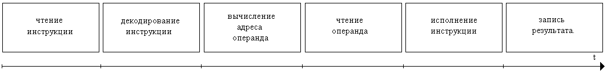
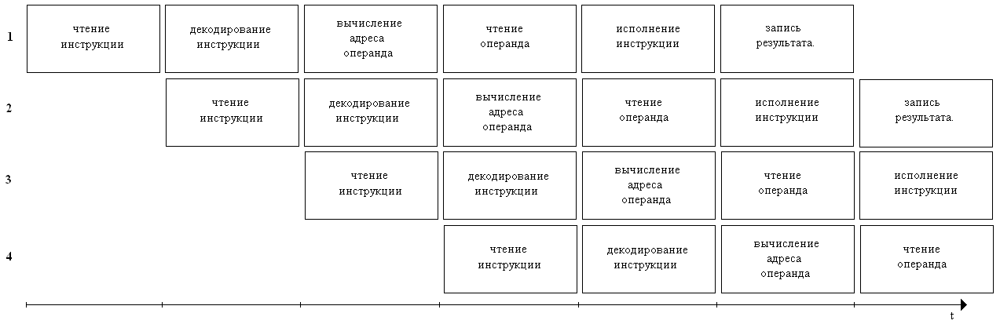
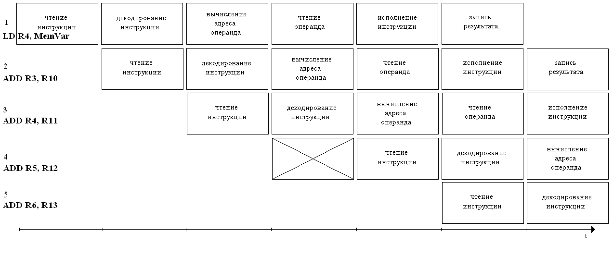
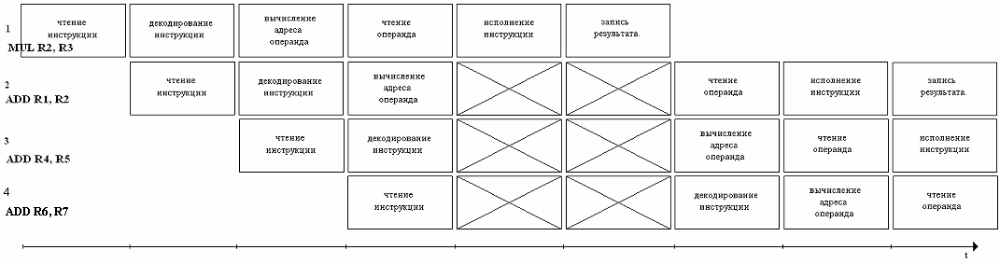
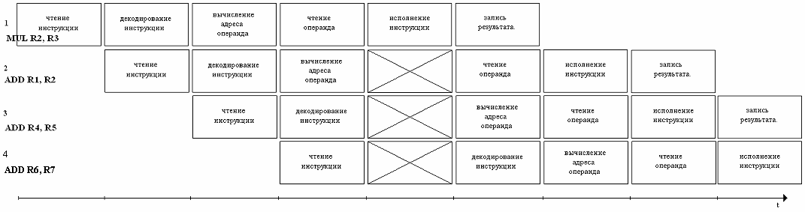
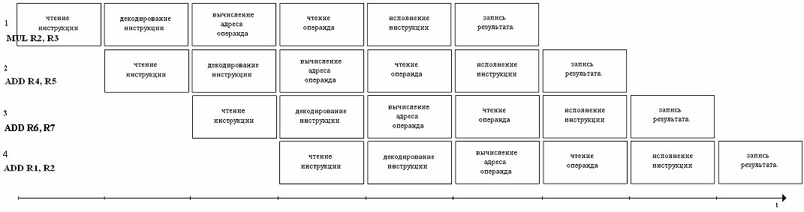
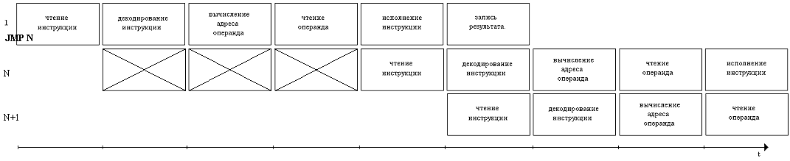
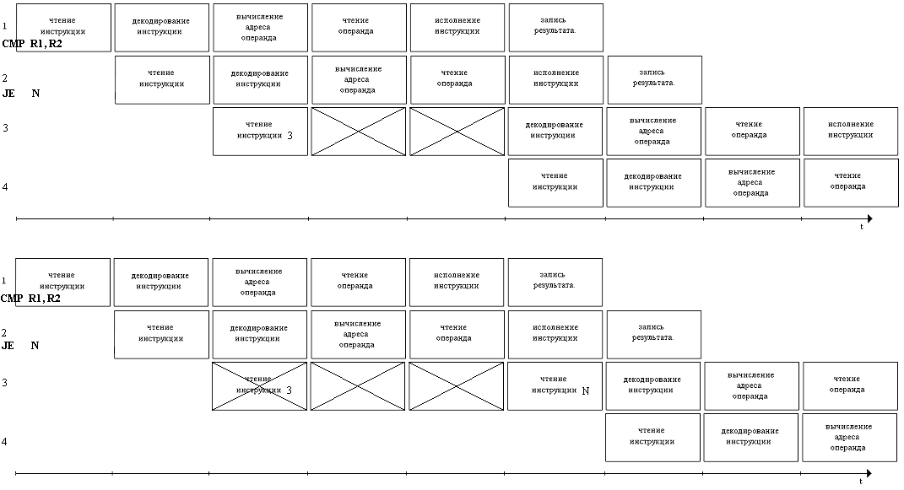
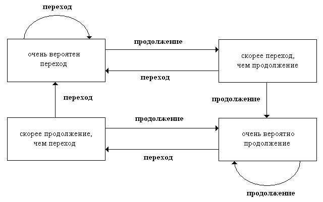

Выполнение инструкции микропроцессора состоит из нескольких стадий, исполняемых последовательно. Число и состав стадий варьируется для разных микропроцессоров. Рассмотрим следующий набор стадий исполнения команды микропроцессором [1, 2]:
Разные стадии исполняются разными аппаратными блоками в микропроцессоре. При последовательном исполнении стадий в каждый момент времени только один такой блок работает, а остальные простаивают. Одна стадия требует один цикл процессорного времени для своего выполнения. Собственно, время цикла и определяется как максимальное время, требуемое для исполнения стадии. Для исполнения всей команды требуется шесть циклов. Один цикл микропроцессора может занимать от одного до нескольких тактов генератора тактовой частоты для микропроцессора. Это соотношение может различаться для разных микропроцессоров. В этой главе для упрощения будем рассматривать случай, когда один цикл равен одному такту.

Рис. 1. Последовательное исполнение стадий инструкции
Конвейеризация - архитектурный принцип, позволяющий нескольким инструкциям выполняться одновременно. При этом микропроцессору не добавляется дополнительного оборудования для исполнения стадий, так как одновременно исполняются только разные стадии инструкций.
Достоинство конвейеризации заключается в том, что одновременное исполнение инструкций позволяет во многих случаях выполнять большее их число за единицу времени. К недостаткам можно отнести [3]:
Работа конвейера показана на рис. 2. Ось X показывет время, измеряемое в тактах микропроцессора. Ось Y направлена вниз и показывает номер выполняемой инструкции.

Рис. 2. Конвейерное исполнение инструкций
Первая инструкция начинает исполняться на первом такте – происходит чтение ее кода из памяти. На втором такте происходит декодирование кода первой инструкции и чтение кода второй. На третьем такте для первой инструкции вычисляются адреса ее операндов, для второй происходит декодирование кода, а для третьей – чтение кода. Далее на каждом следующем такте начинает исполняться следующая инструкция. Завершение исполнения первой инструкции происходит на шестом такте, т.е. нет никакого ускорения при исполнении первой инструкции по сравнению с неконвейерной архитектурой. Однако, далее завершение исполнения очередной инструкции происходит на каждом следующем такте. С первого по шестой такты происходит загрузка или разгон конвейера. При загрузке конвейера не все аппаратные блоки для исполнения стадий инструкций работают. После того, как загрузка конвейера закончилась, работают все эти блоки.
Подавляющее большинство современных микропроцессоров имеют конвейерную архитектуру. Разные микропроцессоры имеют разные реализации конвейера. В частности, различается число стадий (см. табл 1). Большее число стадий приводит к большему ускорению, так как при этом возможно одновременное исполнение большего числа команд (как правило, число одновременно исполняемых команд равно числу стадий). Однако, при этом усложняются передачи данных и синхронизация между фазами. Это ведет к усложнению микропроцессора. Типичное число стадий для RISC процессоров – 5. Они совпадают с рассматриваемыми нами шестью стадиями, исключая стадию три: вычисление адреса операнда [4].
|
микропроцессор |
Число стадий конвейера |
|
Atmel AVR8 |
2 |
|
Microchip Technology PIC |
2 |
|
IBM PowerPC |
4 (для целочисленных инструкций), 6 (для инструкций с плавающей запятой) |
|
Intel 80486 |
5 (для целочисленных инструкций), 8 (для инструкций с плавающей запятой) |
|
Intel Pentium |
5 (для целочисленных инструкций), 8 (для инструкций с плавающей запятой) |
|
IBM Cell |
>20 (для конвейера в PPE) |
|
Intel Pentium 4 |
31 (для Pentium 4 Cedar Mill) |
Табл. 1. Число стадий конвейера.
При разбивке исполнения инструкций на стадии, перед разработчиками микропроцессора стоит задача максимально уравнять время выполнения различных стадий. Время, которое отводится под один цикл, опеределяется максимальным временем, затрачиваемым на исполнение стадии. Если время, которое требуется для исполнения некоторой стадии существенно больше, чем для всех остальных стадий, то блоки, исполняющие их будут простаивать часть времени цикла.
Случай, рассмотренный на рис. 2, когда, начиная с шестого такта, завершение исполнения очередной инструкции происходит на каждом такте, - пример идеальной работы конвейера, при которой нет простоев, а микропроцессор достигает своей теоретической максимальной (пиковой) производительности. На практике такая ситуация невозможна. Конвейер иногда приостанавливается, некоторые блоки простаивают на отдельных тактах. Это происходит, когда невозможно начать выполнение следующей инструкции в отведенном для этого такте. Когда приостанавливается выполнение инструкции, также приостанавливается и выполнение всех следующих за ней инструкций. При этом предыдущие инструкции продолжают исполняться, но новые инструкции не считываются.
Приостановка может возникнуть по нескольким причинам:
Структурные коллизии возникают, когда один и тот же аппаратный ресурс (например, память, шина или функциональный блок микропроцессора) запрашивается более чем одной инструкцией одновременно. Для разрешения коллизий этого вида требуемый ресурс предоставляется инструкции, которая поступила на исполнение раньше.
На рис. 3 показан пример структурной коллизии. На четвертом такте две инструкции нуждаются в шине для доступа к памяти. Первая инструкция (LD R4, MemVar) выполняется на стадии чтения операнда из памяти, а вторая (ADD R5, R12) – на стадии чтения инструкции из памяти. Шина передается в распоряжение первой инструкции, а чтение второй инструкции откладывается до пятого такта.

Рис. 3. Пример структурной коллизии
Структурные коллизии можно устранять, вводя дублирующие аппаратные блоки. Например, вместо одной шины для доступа к памяти можно реализовать две шины. Одна будет использоваться для чтения инструкций из памяти, а другая - для чтения и записи данных. В таком случае рассмотренная выше коллизия не будет иметь место. На одном и том же такте первая инструкция будет использовать одну шину для стадии записи данных, а вторая – другую шину для исполнения на стадии чтения инструкции. Или же в микропроцессоре могут имется отдельные кэш данных и кэш инструкций. Как кэш память, так и дублирование аппаратных блоков широко применяются в современных высокопроизводительных микропроцессорах с суперскалярной архитектурой. В одном микропроцессоре может быть два или несколько арифметических логических устройств, блоков для операций над целыми числами и блоков для операций над числами с плавающей запятой. Например, в процессоре Intel Itanium 2 [5] имеется шесть арифметических логических устройств общего назначения, два блока для операций над целыми числами и два умножителя-аккумулятора для чисел с плавающей запятой. В процессорных элементах SPE процессора IBM Cell[6] имеется по четыре блока для операций над целыми числами и четыре блока для операций с числами с плавающей запятой с одинарной точностью. Дублирование блоков микропроцессора DEC/Compaq/HP Alpha рассматривается в следующей главе о RISC архитектуре.
Устранение таких коллизий возможно и на уровне программного обеспечения. Это осуществляется платформенно-зависимыми оптимизаторами бинарного кода программ. Такие оптимизаторы имеются в большинстве современных компиляторов. Оптимизаторы проводят преобразование исходной программы к некоторой другой, идентичной по получаемым результатам, но требующей меньше времени для выполнения (или меньшего объема памяти для хранения). Преобразование состоит из последовательности модификаций бинарного кода, таких как исключение инструкций, перестановка инструкций и, вообще, замена одной группы инструкций на другую. Для устранения структурной коллизии, одна из вовлеченных в нее инструкций меняется местами с некоторой другой. В результате, на такте, на котором возникала коллизия, остается только одна инструкция, нуждающаяся в некотором аппаратном ресурсе.
Коллизии по данным возникают, когда результат одной инструкции должен использоваться как операнд другой инструкции, и первая инструкция не кончила выполняться, когда вторая уже начала.

Рис. 4. Пример коллизии по данным
На рис. 4 показан пример коллизии по данным. На пятом такте вторая инструкция (ADD R1, R2) нуждается в результате первой команды (MUL R2, R3). Этот результат сохраняется в регистр R2 на шестом такте и доступен для использования, начиная с седьмого такта. По-этому, выполнение второй и следующих за ней инструкций откладывается на два такта.
Разрешение коллизии по данным аппаратными средствами микропроцессора заключается в том, что исполнение инструкции, операнд которой не готов, задерживается до завершения той инструкции, где этот операнд является результатом.

Рис. 5. Уменьшение задержки при использовании обходных путей
Уменьшение задержки из-за подобной коллизии возможно при наличии обходных путей передачи данных. В частности выход арифметического логического устройства может подаваться напрямую на его же вход. Это исключает необходимость дожидаться, пока результат будет записан в регистр, экономя один такт. На рис. 5 показан пример с инструкциями, идентичными приведенным выше. Однако, вторая инструкция может продолжить исполнение уже на шестом такте, так ка одновременно с записью результата первой команды в R2, он может подаваться в арифметическое логическое устройство как входные данные для второй команды.

Рис. 6. Оптимизированный код с устраненной коллизией
На уровне программного обеспечения данный вид коллизий устраняется аналогично структурным коллизиям – с помощью перестановок инструкций. Между двумя инструкциями, вовлеченными в коллизию, размещается достаточное число других, с которыми у этих двух нет взаимных зависимостей по данным. В итоге, к моменту начала исполнения второй инструкции первая уже выполнена, и ее результат готов. На рис. 6. показано исполнение кода, в котором между первой и второй командами вставлены две следующие за ними. Так как у первых двух команд нет зависимостей по данным с третьей и четввертой, то, во-первых, коллизия устранена, а во-вторых, оптимизационное преобразование корректно.
Во всех рассмотренных выше ситуациях мы имели дело с линейно исполняемыми участками кода, в которых не было инструкций ветвления. На каждом такте всегда был известен адрес следующей инструкции, которую надо начинать исполнять. Адрес получался инкрементом текущего адреса на единицу. Инструкции ветвления могут менять адрес следующей исполняемой инструкции. Ситуация, когда невозможно начать исполнение следующей инструкции по причине того, что неизвестен ее адрес, называют коллизией по управлению.

Рис. 7. Коллизия по управлению для инструкции безусловного перехода
На примере на рис. 7 рассматривается коллизия по управлению в случае инструкции безусловного перехода. На первом такте происходит чтение инструкции 1 (JMP N, инструкция безусловного перехода на адрес N). На втором такте происходит чтение инструкции 2 и декодирование инструкции 1. После второго такта определено, что первая инструкция – инструкция безусловного перехода. Это приводит в отмене исполнения второй инструкции. Загрузка конвейера новыми командами приостанавливается до того, как станет известен адрес следующей исполняемой инструкции. Адрес перехода доступен после стадии чтения операнда. На пятом такте начинается исполнение инструкции по адресу, на который произошел переход.

Рис. 8. Коллизия по управлению для инструкции условного перехода
Адрес следующей исполняемой инструкции после инструкции условного ветвления заранее неизвестен. Он зависит от выполнения условия. На рис. 8 приведены оба варианта исполнения инструкции условного перехода. Первая инструкция (CMP R1, R2) сравнивает на равенство два регистра. Если они равны, условие перехода истинно, иначе – ложно. Вторая инструкция (JE N) – инструкция условного перехода. Она меняет адрес следующей исполняемой инструкции на N, если условие – истинно. В противном случае адрес следующей инструкции будет 3.Значение условия готово после стации исполнения для первой инструкции, т.е. после пятого такта. Если условие ложно (верхняя часть рис. 8), то продолжается исполнение третьей инструкции. При этом задержка равна двум тактам. Если условие истинно (нижняя часть рис. 8), то происходит переход на адрес N. Он также уже известен на пятом такте. При этом исполнение третьей инструкции прекращается, начинается загрузка инструкции по адресу N. В этом случае задержка равна трем тактам.
Для разрешения и устранения коллизий по управлению используют несколько различных подходов, реализуемых как в аппаратном, так и в программном обеспечении.
Предсказание ветвления [7] – выбор одной из возможных ветвей программы, возникающих после инструкции условного ветвления до того, как вычислено условие этого ветвления. При этом инструкции, располагающиеся в выбранной ветви могут загружаться в конвейер. Выбор ветви может основываться либо на предварительно собранной статистике для инструкции ветвления по текущему адресу (динамическое предсказание), либо на явном указании в коде инструкции или постоянном выборе одной и той же ветви (статическое предсказание). Когда условие вычислено, возможны два случая. В первом случае, когда предсказание оказалось верным, конвейер продолжает работать без остановки. Если условие оказалось ложным, то, как это было показано в примере на рис. 8, происходит отмена выполнения одной или нескольких инструкций по неверно предсказанным адресам.
Простейший вариант предсказания называется тривиальным предсказанием. Он сводится к тому, что всегда предсказывается продолжение исполнения, а не переход. В итоге, примерно половина предсказаний оказывается верной. Тривиальное предсказание использовалось в Motorola 68020, первых RISC процессорах SPARC и MIPS.
В случае, когда выбор ветви основывается на явном указании в коде инструкции, говорят о статическом предсказании. Частный случай статического предсказания заключается в том, что переходы назад (на меньшие адреса) считаются более вероятными,чем продолжение последовательного исполнения, а переходы вперед – менее вероятными (использовалось в IBM PowerPC 601). С учетом того, что инструкции условного перехода часто служат для организации циклов, предсказания, как правило верны. Итераций бывает больше, чем выходов из цикла. Переход назад означает начало новой итерации для цикла repeat-until, а переход вперед – выход из цикла while. Статическое предсказание может использоваться не только само по себе, но и в комбинации с другими видами предсказания. Например, в процессорах Intel Pentium 4, Motorola MPC 7450, когда другие виды предсказания сделать невозможно, используется статическое предсказание.
Для динамического предсказания ветвления используется таблица, которая отражает историю выбора переходов для инструкций. Позиция в таблице определяется как функция от адреса инструкции. Как правило, младшие биты адреса инструкции задают позицию. В случае, если размер элемента таблицы равен одному биту (например, в процессоре MIPS R8000), в нем хранится последнее вычисленное значение условия для инструкции ветвления. Предсказание оказывается верным, если значение условия совпадает с предыдущим. Для циклов верно предсказываются переходы для всех итераций, кроме первой. Неверно предсказывается выход из цикла. Переход для первой итерации предсказывается, как правило, неверно.

Рис. 9. Автомат для бимодального предсказания.
Бимодальное предсказание использует таблицы с двухбитовыми элементы. Каждый элемент принимает одно из четырех возможных значений, задающих вероятность перехода:
Переходы между состояниями описываются автоматом Мура (см. рис. 9) и происходят в момент, когда вычислено значение условия. Исключая случай, когда цикл в программе выполняется первый раз, предсказание перехода для первой итерации оказывается верной. Переход при выходе из цикла, как и с однобитовыми элементами, предсказывается неверно. Для условных операторов с условием, существенно чаще принимающим одно значение, бимодальное предсказание дает почти в два раза меньше неверных предсказаний, чем в случае с одобитовыми элементами. Бимодальное предсказание ошибается только при редком значении условия. Для однобитовых элементов, если после редкого следует типичное значение, предсказание оказывается неверным еще один раз. Доля верных предсказаний для бимодального предсказания различается для разных программ. Для тестовых программ SPEC 89 при больших размерах таблицы она составляет 93,5%.
Существуют и другие виды предсказания ветвления, включая комбинации приведенных выше [7]. Иногда создается таблица, содержащая не только статитику истинности условия, но и вероятный адрес перехода, что повышает эффективность предсказания для переходов с косвенным заданием адреса. Такие инструкции перехода генерируются, например, при вызове функций по указателям в Си или вызове полиморфных методов в Си++.
Кроме предсказания ветвления имеется другой аппаратный способ устранения коллизий по управлению – загрузка и начало исполнения обеих ветвей после инструкции условного перехода. Реализация данного способа значительно усложняет архитектуру микропроцессора. Другой существенный недостаток – увеличение числа обращений к памяти для загрузки команд. Его можно сгладить использованием быстрой кэш памяти для инструкций. Также критичным параметром является пропускная способность шины и наличие выделенных шин для загрузки команд.
Еще один способ устранения коллизий по управлению заключается в использовании условных пересылок данных, инструкций пересылки данных, которые срабатывают только при выполнении условия. В отдельных случаях с помощью таких инструкций можно избежать использования команд условного ветвления, и, как следствие, коллизии по управлению. В отличие от предсказания ветвления, условные пересылки данных имеют весьма ограниченное применение. Они эффективны только при использовании для условного оператора, тело которого может сводиться к очень малому числу инструкций пересылок данных. Условные пересылки были реализованы в процессорах DEC/Compaq/HP Alpha (инструкция cmov).
Основные программные методы устранения коллизий по управлению сводятся к отложенному ветвлению и развертке циклов. Отложенное ветвление заключается в перестановке инструкций для разнесения инструкции, вычисляющей условие, и инструкции, ветвящейся по этому условию. Развертка циклов – преобразование, выполняемое оптимизаторами, которое превращает уменьшает число итераций, а значит и инструкций переходов, увеличивая размер тела цикла. Развертка циклов увеличивает размер бинарного кода. Во многих случаях она оказывается неэффективной, приводя к замедлению исполнения программы.
[1] Null L., Lobur J. - The Essentials of Computer Organization and Architecture. - Jones and Bartlett Publishers. - 2003
[2] Pipelining. - http://www.ida.liu.se/~TDTS5/lecture3.pdf
[3] Instruction pipeline. - http://en.wikipedia.org/wiki/Instruction_pipeline
[4] Classic RISC pipeline. - http://en.wikipedia.org/wiki/Classic_RISC_pipeline
[5] Михаил Кузьминский. - Краткий обзор IA-64. - Открытые Системы. - 1999. - вып. 9-10. - http://www.citforum.ru/hardware/articles/ia64.shtml
[6] David K. Every. - IBM’s Cell Processor: The next generation of computing?. - Shareware Press. - 2005
[7] Branch predictor. - http://en.wikipedia.org/wiki/Branch_prediction